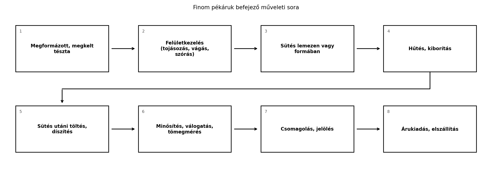

A finom pékáruk akkor adják vissza a munkánkat, ha a kelesztés és a sütés végén nemcsak a darabtömeg, hanem a héj fénye, a tészta foszlóssága, a töltelék aránya és a csomagolás is rendben van. Ez az alfejezet a briós-, kalács-, kuglóf-, omlós és leveles termékek készresütését és befejező műveleteit kapcsolja össze egyetlen üzemi munkafolyamattá.
A finom pékáru gyártása nem ér véget a tészta megformázásával. A kelesztés, a felületkezelés, a sütés, a hűtés, a kiborítás és a sütés utáni töltés-díszítés egyetlen láncszem. Az alábbi folyamatábra a főbb műveleti sorrendet mutatja. A vastag nyilak nem azt jelentik, hogy a lépések közt nincs szünet; a pihentetési és hűtési idők éppen olyan fontosak, mint a gépi műveletek.

A sorrendet mindig a termék technológiai lapja és a HACCP-terv határozza meg, de a fenti lánc a leggyakoribb.
A finom pékáruk tésztái több zsiradékot, tojást, cukrot és tejet tartalmaznak, mint a hagyományos vizes péksütemények. Ezért a kelesztésük hőmérsékleti és páratartalmi ablaka általában szűkebb, a tészta tapadósabb, a felület könnyebben bőrösödik, és a túlkelesztés hamarabb okoz formatorzulást.
Definíció. A kelesztési paraméterek a kelesztőtér hőmérséklete, relatív páratartalma, a kelesztési idő és a termék kívánt végső térfogatnövekedése. A finom pékáruknál ezeket termékcsoportonként, a tészta összetételéhez igazodva kell beállítani.
Szabály. Finom pékárukhoz általában gyors, de óvatos kelesztést használunk; a túl nagy páratartalom a felületet ragadóssá teszi, a túl alacsony páratartalom bőrösödést okoz, a túl magas hőmérséklet pedig zsírosodást, illetve a leveles tésztánál vajkifolyást idézhet elő. A gyakorlati tartományok tanulási példák, és az üzemi technológiai laphoz, valamint a gyártói adatlaphoz igazítandók.
Előírás. A 852/2004/EK rendelet általános higiéniai követelményei szerint a nyersanyagokat és a félkész termékeket a romlást okozó hőmérsékleti hibáktól védeni kell; a kelesztőkamra ellenőrzése ennek üzemi alkalmazása, az ellenőrzési pontok a HACCP-terv részét képezik. (ellenőrizendő: a rendelet II. melléklete; az üzemi HACCP-terv által meghatározott kritikus határértékek)
A kelesztési paramétereket termékcsoportonként az alábbi táblázat foglalja össze. Az értékeket a saját receptúra és kemence is befolyásolja.
| Termékcsoport | Kelesztő hőmérséklet (°C) | Relatív páratartalom (%) | Jellemző kelesztési idő (perc) | Megjegyzés |
|---|---|---|---|---|
| Tojással dúsított tészta (briós, foszlós kalács, kuglóf) | 26–30 | 70–80 | 40–70 | A felület ne bőrösödjön; a tészta tapadósabb. A vajas tésztánál a vaj 28–30 °C fölött olvadni kezd, ezért a tartomány alsó felét válasszuk; 30 °C fölé nem megyünk. |
| Omlós tészta alapú termék | – | – | – | A klasszikus omlós tésztát nem kelesztjük, hűtve pihentetjük; az élesztős omlós tésztáról lásd az Omlós tészta és omlós tésztából készült termékek alfejezetet. |
| Élesztős hajtogatott (leveles kelt) tészta | 24–26 | 60–75 | 30–60 | Csak a laminálás utáni utolsó kelesztés; túl magas hőmérsékleten vajfolyás. |
| Élesztő nélküli leveles tészta | – | – | – | Nem kelesztjük; sütés előtt hűtve pihentetjük (gőzlazítású, lásd a Leveles tészta: hagyományos és leveles margarinos eljárás alfejezetet). |
| Kevert, formázott finom pékáru | 26–30 | 65–75 | 30–50 | Formában és lemezen is keleszthető. |
Higiénia. A kelesztőrácsokat és a formákat a műszak előtt tisztán, sütőzsírtól vagy morzsától mentesen kell használni. A szennyezett rácsról a tésztára kerülő morzsa a termékfelületen égési foltot és mikrobiológiai kockázatot okozhat. A kelesztőteret a termékváltáskor is ellenőrizni kell, különösen az adott allergént nem tartalmazó tételek előtt.
Kelesztés közbeni műveletek. A kelesztési szakaszban a terméket nem szabad feleslegesen mozgatni, a kamra ajtaját gyakran nyitogatni, vagy a tésztát huzatnak kitenni. Az osztott, formázott darabokat úgy kell a lemezre vagy formába helyezni, hogy a kelesztés végére se érjenek össze, de a vágási, tojásozási, szórási művelet számára hozzáférhetők maradjanak.
Állag és megkeltség ellenőrzése. A finom pékáruknál a megkeltséget ugyanúgy ujjpróbával és a térfogatnövekedés becslésével állapítjuk meg, mint a hagyományos péksüteményeknél. A tojással dúsított tészták felülete enyhén tapadós, fénylő; a leveles tészta felülete sima, kissé szárazabb. A túlkelt finom tészta szétfolyik, a vágás szélei elmosódnak, a termék a sütőben összeeshet.
A finom pékáruk héjának színe, fénye és látványa döntően a vetés előtti felületkezeléstől függ. Ezek a műveletek közvetlenül a kelesztés után, a vetés előtt történnek, mert a megkelt tésztát csak óvatosan szabad érinteni.
Definíció. A tojásozás a megkelt, nyers tészta felületének vékony, egyenletes rétegben tojással vagy tojás-tej/víz keverékkel való lekenése. A márványozás a tojásozott vagy még nedves felületre mintázó húzás, csíkozás vagy a felület kettős színhatásának kialakítása. A szórás a felületre juttatott mag, kristálycukor, vagy fűszer. A vágás a kelesztés után a tészta felületén ejtett, meghatározott mélységű és irányú metszés.
Higiénia. A tojásozáshoz frissen felütött, hűtve tárolt tojást használjunk; a tojást közvetlenül felhasználás előtt keverjük el, és a maradékot ne tartsuk órákig melegben. A nyers tojás felületéről a szennyeződés a tésztára kerülhet, ezért a tojástartó edényt tisztán, elkülönítve kell tartani, a tojásozó ecsetet pedig használat után forró vizes tisztítással elmosni. A nyers tojásból eredő mikrobiológiai kockázat a HACCP-tervben külön pont lehet.
Allergén. A tojás önmagában allergén, így a tojásozott termék csomagolásán a tojást jelölni kell. Ugyanígy a szórt mag allergén lehet (szezám, dióféle – pl. dió, mandula; a mák nem tartozik a 14 kötelezően kiemelendő allergén közé); a szórás közben a többi termékre átkerülhet, ezért az elkülönítés és a sorrendtervezés kritikus. A 1169/2011/EU rendelet szerint ezeket az összetevőket kiemelten kell jelölni. (ellenőrizendő: a hatályos 1169/2011/EU rendelet II. melléklete szerinti allergénlista)
Tojásozás kivitelezése. A tojást átszűrve, csomómentesre kell keverni, és puha, tiszta ecsettel, vékony rétegben a felületre hordani. A tésztát nem szabad eláztatni, mert a felesleges tojás a forma aljára folyik, és a termék alja égő szagú, elszíneződött lesz. A kenés akkor jó, ha a felület egyenletesen fénylik, de nem folyik, és az ecset nem húzza ki a tészta felszínét.
Az alábbi ábra felső sora a helyes, alsó sora a hibás tojásozást és annak sült eredményét mutatja (1–2. oszlop); a 3. oszlop a márványozás két lépése, amelyet a következő bekezdés ír le.
A két sor összevetése a tipikus hibát mutatja: a lemezre folyó tojás a terméket odaragasztja, a széle és az alja megég. A HTML-kiadásban a helyes és a hibás változat gombokkal váltható.
Márványozás. A márványozás gyakorlati megoldása, hogy a tojásozott felületre kakaós, kávés, vagy ételfestékes tojásos mázzal vékony csíkokat húzunk, majd egy tiszta fogpiszkálóval vagy ecsetnyéllel a csíkokat merőlegesen áthúzzuk. A cél a márványos, két színből álló felület. A minta a sütés közben megszilárdul, és a héj színe a festék hatására alakul. A használt festéknek élelmiszeripari felhasználásra alkalmasnak kell lennie, a gyártói adagolást be kell tartani. (ellenőrizendő: az adott ételfesték vagy kakaós mázhígítás gyártói adatlapja)
Szórás. A szórást a tojásozás vagy a felületi mártás után, de még a vetés előtt kell elvégezni, hogy a mag megtapadjon. A szórás lehet mák, szezámmag, szezámmag-keverék, napraforgómag, tökmag, kristálycukor, fahéjas cukor, vagy dekorációs jégcukor. A magvakat a felhasználás előtt szükség szerint át kell válogatni, mert a közé kerülő idegen anyag (kő, héj, szártöredék) a fogakban és az elszámolásban is gondot okoz. Az allergén magvak szórásakor a tételt az adott allergént nem tartalmazó tételek után kell ütemezni, és a lehulló magot azonnal össze kell takarítani.
Vágás. A finom pékárukon a vágás célja a jellegzetes forma (pl. kalácsfonat vonalai, briós keresztmetszés, leveles tészta dekoratív metszése) és a sütés közbeni szabályozott repedés. A pengét vagy éles, vékony kést használjunk, hogy a tésztát ne nyomjuk össze. A vágás iránya és mélysége a termék jellegétől függ: a kalácsot gyakran csak a felületet érintő, sekély vonallal, a leveles tésztát a felső rétegen átvágva, a brióst kissé mélyebben, keresztben vágjuk. A túl mély vágás a tészta szétnyílását, a túl sekély metszés pedig a repedéskép elmaradását okozza.
A finom pékáruk sütése a hagyományos termékeknél alacsonyabb hőmérsékleten, gyakran hosszabb idővel történik, mert a tészta magasabb tojás-, cukor- és zsírtartalma hamarabb barnítja a héjat, miközben a bélzet lassabban éri el a biztonságos maghőmérsékletet.
Szabály. A finom pékárukat lemezen vagy formában sütjük. A lemezes sütésnél a lemezt elő kell készíteni, a formás sütésnél a formát ki kell zsírozni, lisztezni, vagy sütőpapírral, formavédő anyaggal bélelni. A páraviszonyokat a termék jellege határozza meg: a tojással dúsított termékeknél kevés vagy közepes gőz kell, az omlós tésztánál gőz nélkül, a leveles tésztánál pedig rövid, intenzív gőz segíti a rétegek nyílását.
Gépbiztonság. A forró kemenceajtót, a gőzcsapot és a sütőlemezt csak védőkesztyűvel, az üzemi utasítás szerint szabad kezelni. A gőz lecsapatásakor az arcot és a kezet távol kell tartani, mert a forró gőz égési sérülést okoz. A sütőlemezeket leeresztett állapotban, becsúszás ellen rögzítve kell tölteni. A kemence kezelését csak betanított dolgozó végezheti.
Átsültség. A finom pékáru akkor átsült, ha a bélzet közepén mért maghőmérséklet legalább 92–95 °C, és a termék héja a termékre jellemző színű. A maghőmérséklet mérésére tűszondás hőmérőt használunk; a mérési pontot a termék legvastagabb részére, a középpontba kell helyezni. A maghőmérsékletet mindig a HACCP-tervben megadott értéknek megfelelően ellenőrizzük. (ellenőrizendő: az üzemi HACCP-terv által előírt maghőmérséklet és idő)
Hűtés, kiborítás. A megsült finom pékárut a kemencéből kivéve rácsra, termékkonténerbe vagy hűtőfelületre helyezzük. A formában sült terméket 5–10 percig a formában hagyjuk hűlni, majd óvatosan kiborítjuk. A túl korai kiborítás a kuglóf, kalács vagy gyümölcskenyér szétszakadásához, a késői kiborítás a forma aljára ragadáshoz vezet. A formából kiborított terméket tovább hűtjük úgy, hogy a gőz ne csapódjon le rajta; ezért rácsra helyezzük, nem egymásra.
Higiénia. A hűtőrácsot és a formát minden használat után tisztítani kell. A sütésből kikerült terméket tiszta, fedett vagy védett helyen kell hűteni, hogy a por, a padozatról felverődő szennyeződés és a kártevők ne érjék el. A hullott morzsa és sütőzsír a kártevők táplálékforrása; a sütés utáni takarítás a HACCP jó higiéniai gyakorlata.
A finom pékáruk egy részét sütés után töltik, díszítik, nyomózsák csövével vagy töltőtűvel adagolt krémekkel, lekvárral, csokoládébevonattal, vagy porcukorral. A sütés utáni műveletek során a termék már a csomagolás előtti utolsó lépésben van, ezért a higiénia és az allergénelkülönítés itt különösen fontos.
Szabály. Sütés utáni töltést csak kihűlt, de nem túl hideg terméken végezzünk. A krémek, lekvárok, pudingok hűtést igénylő töltelékek; a hűtési lánc megszakadása a mikrobiológiai kockázatot növeli. A csokoládébevonat hőmérsékletét a gyártói adatlap szerint kell tartani, mert a túl forró bevonat a termék felületét kiégeti, a túl hideg bevonat pedig egyenetlenül dermed meg.
HACCP. A sütés utáni töltés kritikus szabályozási pont lehet, ha a töltelék hűtést igényel, vagy ha a töltés során a termék belső hőmérséklete a mikrobiológiai veszélyzónába kerül. A töltelék hőmérsékletét és a töltött termék hűtési idejét a HACCP-terv szerint kell monitoringozni. (ellenőrizendő: a pékség HACCP-terve, a töltelékek maximális hűtési ideje és hőmérséklete)
Allergén. A különböző töltelékek eltérő allergéneket tartalmazhatnak: a csokoládé tejallergént, a diós töltelék dióallergént, a vaníliakrém tojást és tejet. A töltőeszközöket a termékváltáskor tisztítani kell, a lehulló tölteléket azonnal el kell takarítani, és az adott allergént nem tartalmazó termékeket külön csomagolóanyaggal, elkülönített felületen kell tölteni. A keresztszennyeződés elkerülése a 852/2004/EK rendelet szerinti jó higiéniai gyakorlat része. (ellenőrizendő: az üzemi allergénkezelési terv)
Minősítés, válogatás, tömegmérés. A kihűlt terméket a minőségi előírások szerint válogatjuk. A repedt, szakadt, egyenletlenül kelt, nem átsült vagy égési hibás darabokat külön tároljuk, és a selejt okát feljegyezzük. A tömegmérés a késztermék-ellenőrzés része; a nettó termék tömegét a termékre előírt tűréshatáron belül kell tartani. A tömegméréshez hitelesített, ellenőrzött mérleget használunk. A mérési eredményeket a gyártási naplóban dokumentáljuk.
Csomagolás, jelölés. A finom pékárukat a termék jellegétől függően papírzacskóba, fóliába, dobozba vagy védőgázas csomagolásba helyezzük. A csomagolóanyag élelmiszerrel érintkező anyag legyen (1935/2004/EK rendelet szerint), és a terméket a fogyasztói tájékoztatásra vonatkozó 1169/2011/EU rendelet szerint kell jelölni. A kötelező jelölés tartalmazza a termék megnevezését, az összetevőket, a nettó mennyiséget, a minőségmegőrzési időt, a tárolási hőmérsékletet, ha szükséges, és az allergéneket kiemelve. (ellenőrizendő: a hatályos 1169/2011/EU rendelet szerinti jelölési kötelezettségek és a Magyar Élelmiszerkönyv sütőipari irányelvei)
1. példa – Briós kelesztési ablak. Egy pékség 60 g nyers tésztadarabokból készít mini brióst. A technológiai lap szerint a kelesztőkamra hőmérséklete 28 °C, a relatív páratartalom 75%. Az első tapasztalat szerint 45 perc alatt a tészta térfogata a kiindulási körülbelül kétszerese, felülete feszes, ujjnyomásra lassan, részben visszaugrik. A második tételnél a kamra hőmérséklete 34 °C-ra emelkedik, a páratartalom 70%-ra. A tészta 35 perc alatt éri el a kívánt térfogatot, de a felülete tapadósabb, és a vágás után kissé szétfolyik. Következtetés. A magasabb hőmérséklet lerövidíti a kelesztési időt, de a tészta stabilitása csökken. A beállítást a technológiai lap 28 °C-os értékére kell visszavenni, vagy a kelesztési időt 30–35 percre csökkenteni, és azonnal vetni. Ez a példa azt mutatja, hogy a kelesztési paraméterek egymástól függenek, és a hőmérséklet emelése nem helyettesíti a türelmet.
2. példa – Élesztős hajtogatott pékáru hűtése vetés előtt. Egy élesztős hajtogatott (croissant-jellegű) pékáru tételnél a formázott darabok a kelesztőben 27 °C-on (a 26 °C-os felső határ fölött), 65% páratartalom mellett 40 percet álltak. A felületükön a vajcsíkok kezdenek kiolvadni, a tészta széle zsíros fénnyel jelenik meg. A pék ellenőrzi a kamra hőmérsékletét, és azt tapasztalja, hogy a kijelző 27 °C, de a kamra középső rácsán egy fűtőbetét közelebb van, és ott a levegő 30 °C fölé melegszik. Következtetés. A leveles tészta érzékeny a helyi melegedésre. A rácson a termékeket át kell csoportosítani, a sérült darabokat selejtezni vagy áthelyezni hideg helyre 10 percre, a kamra levegőáramlását ellenőrizni. A vajkifolyás miatt a termék a sütőben nem fog kellőképpen emelkedni, ezért a tételt a technológiai lap szerinti (nem csökkentett) hőfokon, visszahűtés után kell sütni; a minőség valószínűleg nem éri el az előírtat, ezért a tételt minőségi okból el kell különíteni (ellenőrizendő: üzemi technológiai lap).
Egy pékségben húsvét előtt nagyobb mennyiségű foszlós kalácsot kellett sütni. A tészta rendben kelt, a kalácsokat tojásozták és vetették. A késztermék héja szép fényű volt, ám a formákból kiborítva az aljukon világos, puha, nyerses réteg maradt. A pék a sütési naplóban ellenőrizte a maghőmérsékletet: a szondát a kalács felső, vastagabb részébe szúrta, és ott 93 °C-ot mért. A valódi hiba az volt, hogy a kalács alja a formában szorosan érintkezett a hideg forma fallal, és a szonda nem érte el a középpontot, így az alsó rész nem sült át. A megoldás a kemence alsó hőfokának emelése, a formák magasabbra helyezése, a sütési idő meghosszabbítása, és a maghőmérsékletet a forma közepén, a legvastagabb ponton kell mérni. A tanulság: az átsültség mérése nem formalitás, a mérőszonda helye meghatározza a döntést.
Cél: Foszlós kalács kelesztésének, sütésének, kiborításának, hűtésének, minősítésének, tömegmérésének és csomagolásának elvégzése technológiai lap szerint.
Eszközök és anyagok: Foszlós kalácstészta, kalácsforma, sütőlemez, kelesztőkamra, kemence, tojás (tojásozáshoz), ecset, kés/penge, hűtőrács, tűszondás hőmérő, mérleg, csomagolóanyag, jelölőcímke, kéztörlő, takarítóeszközök.
Higiénia. Tiszta munkaruha, hajháló, ékszer nélkül. Kézmosás, a munkafelület és a forma ellenőrzése. A nyers tojást hűtve tároljuk, a tojásozó edényt használat után elmosogatjuk. A sütőből kikerült terméket tiszta rácson hűtjük.
Gépbiztonság. A kemence és a kelesztőkamra kezelése csak betanítás után. Védőkesztyű a forró formához. A sütőlemezt becsúszás ellen rögzítjük. A hőmérő szondáját óvatosan, a kezet a forró lemez felé nem nyújtva helyezzük be. A formát kiborításkor stabil, hőálló felületen tartjuk.
Lépések:
Ellenőrzési pontok: A kelesztési idő és páratartalom; a tojásozás egyenletessége; a maghőmérséklet; a kiborítási idő; a hűtési idő; a nettó tömeg; a csomagolóanyag sértetlensége.
Dokumentálás: A kelesztési, sütési, hűtési és minősítési paramétereket a gyártási naplóba és a CCP-ellenőrzőlapra rögzítjük.
Termék: Foszlós kalács (sütőmargarinos változat; a vajas kalács lapja a vajas tojásos tésztákról szóló alfejezetben alacsonyabb, 24–26 °C tésztahőmérsékletet ad), formában sütött, késztermék nettó tömege kb. 550 g/db, tétel: 10 kg liszthez.
| Nyersanyag | Lisztre vetített % | Mennyiség (kg) | Megjegyzés |
|---|---|---|---|
| BL 55 liszt | 100 | 10,00 | átszitálva, hideg |
| Tej (3,6%) | 40 | 4,00 | hűtve, 4 °C alatt |
| Tojás (friss, héj nélkül) | 20 | 2,00 | hűtve tárolt, tojásozáshoz külön |
| Cukor | 15 | 1,50 | porcukor vagy kristálycukor |
| Sütőmargarin | 10 | 1,00 | puha, de nem olvadt |
| Friss élesztő | 6 | 0,60 | előzetesen tejben felfuttatva |
| Só | 1,5 | 0,15 | jódozott vagy tengeri só |
Tészta tömege: kb. 19,25 kg (tésztahozam 192,5 kg/100 kg liszt; folyadékegyenértékes TA ≈ 150 – tanulási példa, ellenőrizendő).
Műveleti paraméterek:
- Dagasztás: lassú fokozat 4 perc, gyors fokozat 12–15 perc,
tésztahőmérséklet 26–28 °C.
- Első kelesztés: 25–30 perc, 26–28 °C, 75–80% pára.
- Osztás, formázás: 600 g/db nyers tészta a formába, fonás vagy
tekerés.
- Második kelesztés: 45–60 perc, 28 °C, 75–80% pára.
- Felületkezelés: vékony tojásozás; kívánságra mákszórás.
- Sütés: 180–190 °C, 35–45 perc, enyhe gőz az elején; maghőmérséklet
legalább 92 °C.
- Hűtés: formában 5–10 perc, kiborítás, rácson 60–90 perc.
Allergének: glutén (liszt), tojás, tej (tej, vaj, margarin tejport tartalmazhat). A margarin szójalecitint tartalmazhat, ezért a csomagoláson a szóját is ellenőrizni kell. (ellenőrizendő: az adott margarin összetétele) A mák nem tartozik az 1169/2011/EU II. mellékletének 14 allergéncsoportjába, ezért kötelező allergénkiemelés nem vonatkozik rá; a szezám, a diófélék és a földimogyoró viszont igen. A mákot az üzemi allergénkezelési terv érzékenyítő anyagként kezelheti. (ellenőrizendő: az üzemi allergénkezelési terv)
HACCP- és minőségi pontok: A nyers tojás hűtését az átvételtől a felhasználásig folyamatosan ellenőrizni kell. A sütés maghőmérséklete CCP lehet; a mérési eredményt az ellenőrzőlapra rögzítjük. A hűtés utáni csomagolás előtt a termékhőmérsékletet ellenőrizni kell, hogy a fóliában ne csapódjon le pára. Idegen anyag kockázata a mákszórásnál: átválogatás után használjuk.
A fenti értékek tanulási példák; az üzemi technológiai lap, a gyártói adatlap és a valós lisztvizsgálat felülírhatja. (ellenőrizendő: az üzemi technológiai lap)
A finom pékáru késztermékének érzékszervi jellemzőit a termékcsoportra előírt minőségi követelmények szerint ellenőrizzük:
1. Hiba – A kalács héja túl sötét, a belseje
nyers.
Tünet: a felület sötétbarna, a maghőmérséklet 85 °C alatti.
Ok: a kemence hőmérséklete túl magas, a sütési idő rövid; a termék túl
közel van a felső fűtőelemhez.
Megelőzés/javítás: a hőmérsékletet csökkenteni, a sütési időt növelni, a
terméket lejjebb helyezni; szükség esetén a felületet alufóliával
takarni, és a maghőt ellenőrizni.
2. Hiba – A leveles tészta nem leveles, vaj
folyik.
Tünet: a tészta tömör, a rétegek nem váltak el, a sütőlemezen zsiradék
folyik.
Ok: a laminálás közben a tészta vagy a vaj hőmérséklete túl magas volt,
a vaj beleolvadt a tésztarétegbe; a kelesztés hőmérséklete meghaladta a
zsiradék olvadáspontját.
Megelőzés/javítás: a laminálást hűtött környezetben, 18–22 °C-on
végezni, a tésztát pihentetni a hajtások között, a kelesztést (élesztős
hajtogatott tésztánál) legfeljebb 24–26 °C-on tartani; a sérült tételt a
technológiai lap szerinti (nem csökkentett) hőfokon, visszahűtés után
sütni, de a selejt valószínű, ezért minőségi okból elkülönítendő.
3. Hiba – A kuglóf nem jön ki a formából, az alja
szakad.
Tünet: a kiborításkor a tészta beleragad a forma ívébe, a termék alja és
oldala szétválik.
Ok: a forma nem volt megfelelően kizsírozva-lisztezve, a kiborítás túl
korai vagy túl késői, a tészta túl meleg.
Megelőzés/javítás: a formát sütés előtt egyenletesen kizsírozni,
lisztezni, vagy sütőpapírral bélelni; a sütés után 5–10 percig hűlni
hagyni, majd óvatosan, a formát enyhén megütve kiborítani.
Tünet. Egy brióstétel sütés után alacsony, a teteje ellaposodott, a héja kemény, a bélzete tömör, nem foszlós. A termék tömege megfelelő, de a térfogata kisebb a vártnál.
Lehetséges okok. (1) A tészta túlkelt, ezért a sütőben összeesett. (2) A kelesztőkamra hőmérséklete túl magas, a tészta kifutott. (3) A dagasztás túl rövid volt, a sikérháló nem alakult ki, ezért a gázbuborékok nem maradtak meg. (4) A tojásozás túl vastag volt, és a felület a sütés elején megbőrösödött, majd beszakadt. (5) A kemence gőz nélkül, túl szárazon dolgozott, és a tészta hamar kérget kapott.
Ellenőrzés. A pék megnézi a kelesztési naplót: a kamra 34 °C-ot mutatott a beállított 28 °C helyett, és a tészta 70 percet töltött a kamrában. A dagasztási idő a napló szerint csak 8 perc volt gyors fokozaton, a tészta hőmérséklete 31 °C. A tojásozást az utolsó tálcánál ismét, vastag rétegben végezték.
Valódi ok. A túl magas kelesztési hőmérséklet és a hosszú idő kombinációja túlkelesztést okozott, a rövid dagasztás miatt a tészta nem tartotta meg a gázt, a vastag tojásozás pedig elősegítette a héj idő előtti megszilárdulását, ami a teteje beszakadásához vezetett.
Javítás. A tétel nem menthető, selejtként kell jelölni. A következő tételnél a kamra hőmérsékletét 26–28 °C-ra kell visszavenni, a kelesztési időt 45–55 percre csökkenteni, a dagasztást 12–15 percre növelni, és a tojásozást csak egyszer, vékony rétegben végezni. A maghőmérsékletet a sütés végén ellenőrizni kell.
Megelőzés. A kelesztési paramétereket a technológiai lap szerint kell beállítani, a kamra hőmérsékletét tétel közben is ellenőrizni, a dagasztási időt és a tészta hőmérsékletét a gyártási naplóban rögzíteni. A tojásozást gyakorlott dolgozó végezze, a felesleges kenést elkerülve.
1. feladat (A): Sorold fel a tojással dúsított tészták (briós, foszlós kalács) ajánlott kelesztési hőmérsékletét és relatív páratartalmát, és indokold, miért nem szabad 35 °C fölé emelni a kamrát.
2. feladat (A): Egy leveles pékáru tészta nyers darabja 55 g, a sütési és hűlési együttes veszteség 14%. Mekkora a várható késztermék tömege? Használd a feladási tömeg és a veszteség összefüggését, és ellenőrizd, hogy az eredmény nagyságrendje reális-e.
3. feladat (B): A foszlós kalács technológiai lapja szerint 10 kg liszthez 4,00 kg tej, 2,00 kg tojás, 1,50 kg cukor, 1,00 kg sütőmargarin, 0,60 kg élesztő és 0,15 kg só tartozik. Számold ki az anyagszükségletet 6 kg liszthez. A lisztre vetített százalékokat változatlannak vesszük.
4. feladat (B): Állítsd sorrendbe a briós gyártás befejező műveleteit: tojásozás, kelesztés, hűtés, sütés, tömegmérés, csomagolás, sütés utáni töltés. Jelöld, hol kell maghőmérsékletet mérni, és hol kell a nyers tojás miatt higiéniai elkülönítést tartani.
5. feladat (C): Egy leveles pékáru tételnél a sütőből kivett termék alacsony, alig leveles, és a sütőlemezen zsiradékfoltok vannak. Végezz hibaelemzést: tünet, lehetséges okok, ellenőrző kérdések, valószínű ok, javítás és megelőzés.
6. feladat (D): A gyakorlati útmutató szerint a foszlós kalács maghőmérsékletét a 30. perctől mérjük. Egy mérés során a szonda 89 °C-ot mutat a kalács legvastagabb pontján, a héj szép aranybarna. Mit teszel? Milyen dokumentálási lépést teszel, ha a maghőmérséklet végül eléri a 92 °C-ot?
Önellenőrzés – válaszok:
1. Hamis. A finom pékáruk kelesztési hőmérséklete hasonló (26–30 °C), de
a zsiradék- és tojástartalom miatt a hőmérsékletet szűkebb tartományban
kell tartani; a cél a gyors, de óvatos kelesztés.
2. A formában sült terméket 5–10 percig hűlni kell, hogy a belső gőz
stabilizálódjon; azonnali kiborításkor a tészta szakad, ragad.
3. A sütés utáni töltés, ha a töltelék hűtést igényel vagy a hűtési lánc
megszakad; a kritikus határ a töltelék hőmérséklete és a hűtési idő.
(ellenőrizendő: a pékség HACCP-terve)
4. A tojást, valamint a szórt magvak közül a szezámot, diót, mandulát
stb. a 1169/2011/EU II. melléklete szerint.
5. A terméket még sütni kell, de a felületet alufóliával takarni, a
hőmérsékletet csökkenteni, és addig sütni, amíg a maghőmérséklet eléri a
92 °C-ot. A mérési eredményt a CCP-lapra rögzíteni.
6. Mert a lehulló szezám vagy dió a következő, az adott allergént nem
tartalmazó tételt keresztbe szennyezheti. A mák nem a 14 allergéncsoport
tagja, de az üzemi allergénkezelési terv érzékenyítő anyagként kezelheti
(ellenőrizendő: allergénkezelési terv).
1. feladat megoldása:
A tojással dúsított tészták ajánlott kelesztési paraméterei: 26–30 °C,
70–80% páratartalom. 30 °C fölé azért nem emeljük, mert a zsiradék (vaj,
margarin) olvadni kezd, a tészta zsírosodik, a tojásfehérje szerkezete
károsodik, a tészta szerkezete meggyengül, a formákban szétfolyhat, és a
sütőben összeesik. A kamra hőmérséklete tehát a technológiai lap
értékétől csak kis mértékben térhet el.
2. feladat megoldása:
Adott: m_f = 55 g, v = 14% = 0,14.
Képlet: m_k = m_f × (1 − v).
m_k = 55 g × (1 − 0,14) = 55 g × 0,86 = 47,3 g.
A késztermék várható tömege kb. 47 g. Ez reális, mert a leveles tészták
sütési+hűlési vesztesége 10–15% lehet.
3. feladat megoldása:
Adott: 10 kg liszthez tartozó mennyiségek. Keresett: 6 kg
liszthez.
A lisztre vetített százalékok változatlanok, tehát minden anyag
mennyiségét 6/10 = 0,6 szorzóval kell beszorozni.
Tej: 4,00 kg × 0,6 = 2,40 kg.
Tojás: 2,00 kg × 0,6 = 1,20 kg.
Cukor: 1,50 kg × 0,6 = 0,90 kg.
Sütőmargarin: 1,00 kg × 0,6 = 0,60 kg.
Élesztő: 0,60 kg × 0,6 = 0,36 kg.
Só: 0,15 kg × 0,6 = 0,09 kg.
Liszt: 10 kg × 0,6 = 6,00 kg.
Ellenőrzés: a tészta össztömege 6 + 2,40 + 1,20 + 0,90 + 0,60 + 0,36 +
0,09 = 11,55 kg; a tésztahozam a lisztre vetítve ugyanaz marad (192,5
kg/100 kg liszt), mert a százalékok nem változtak.
4. feladat megoldása:
Helyes sorrend: kelesztés → tojásozás (felületkezelés) → sütés → hűtés →
sütés utáni töltés → tömegmérés → csomagolás. Maghőmérsékletet a sütés
végén kell mérni. A nyers tojás miatti higiéniai elkülönítés a tojásozás
lépésénél, valamint a tojásozó eszközök utáni tisztításnál szükséges. A
sütés utáni töltés HACCP-pont lehet.
5. feladat megoldása:
Tünet: a leveles tészta alacsony, nem leveles, a sütőlemezen
zsiradékfoltok.
Lehetséges okok: a laminálás közben a vaj túl lágy volt; a tészta vagy a
vaj hőmérséklete 20 °C fölé emelkedett; a hajtogatások közötti
pihentetés elmaradt; a kelesztő hőmérséklete meghaladta a zsiradék
olvadáspontját.
Ellenőrző kérdések: milyen volt a tészta hőmérséklete a lamináláskor?
mennyi ideig pihent a hajtások között? milyen kelesztőhőmérsékletet
használtak?
Valószínű ok: a laminálás hőmérséklete túl magas volt, a vaj beleolvadt
a tésztába, így a rétegek nem tudtak elválni a sütés közben.
Javítás: a tétel nem menthető, a sérült darabokat selejtezni kell, a
folyamatot újra kell indítani.
Megelőzés: a laminálást 18–20 °C-on, a vajat és a tésztát hűtve tartva,
a hajtások között 30–60 perc pihenővel végezni; a kelesztő hőmérsékletet
24–26 °C-ra állítani.
6. feladat megoldása:
Ha a maghőmérséklet 89 °C, a termék még nincs átsütve, ezért a sütést
folytatni kell. A héj már aranybarna, ezért a felületet alufóliával
takarjuk, a kemence hőmérsékletét csökkentjük 10–15 °C-kal, és további
5–8 percet sütünk. Ezután ismét mérünk. Ha a maghőmérséklet eléri a 92
°C-ot, a sütést dokumentáljuk a CCP-lapon: termék, dátum, sütési idő,
maghőmérséklet, aláírás. A dokumentáció a HACCP-ellenőrzés része.
A finom pékáruk kelesztése a tészta összetételéhez igazodik: a tojással dúsított tésztákat 26–30 °C-on, 70–80% páratartalom mellett, az élesztős hajtogatott tésztákat 24–26 °C-on, mérsékelt páratartalommal kelesztjük; az omlós és az élesztő nélküli leveles tésztát nem kelesztjük, hűtve pihentetjük. A kelesztés után a felületkezelés (tojásozás, márványozás, szórás, vágás) határozza meg a héj színét, fényét és a repedésképet. A sütés lemezen vagy formában történik; az átsültség ellenőrzésére a tészta legvastagabb pontján mért maghőmérséklet (legalább 92–95 °C) szolgál. A formában sült terméket 5–10 percig a formában hűtjük, majd kiborítjuk és rácson hűtjük tovább. A sütés utáni töltés, díszítés és csomagolás során a nyers tojás, a hűtést igénylő töltelékek és az allergének elkülönítése kiemelt higiéniai és HACCP-feladat. A késztermék minősítésénél az alak, héj, bélzet, íz, tömeg és a csomagolás jelölése egyaránt vizsgálandó. Továbbvitt eredmény. Az itt bemutatott kelesztési, sütési, hűtési és befejező műveleti sorrendet, a felületkezelési módokat, a HACCP-pontokat és a hibaelemzési módszert használjuk a Perecfélék alfejezetben (lúgos felületkezelés, átsültség) és az Elméleti tételek: technológia, higiénia, minőség vizsgaanyagban.